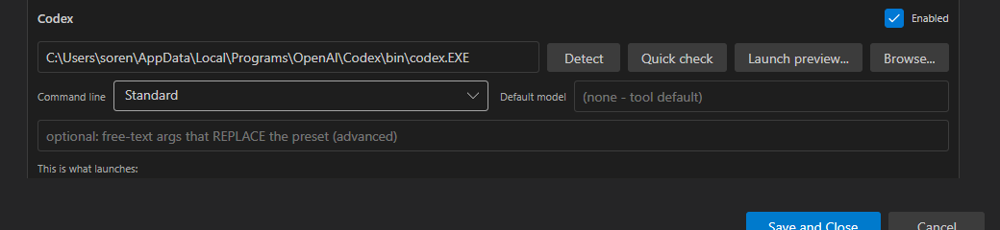
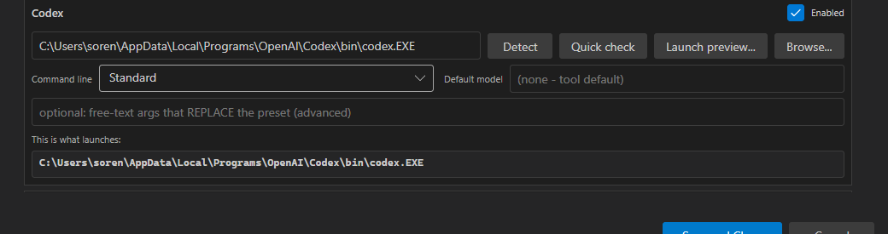
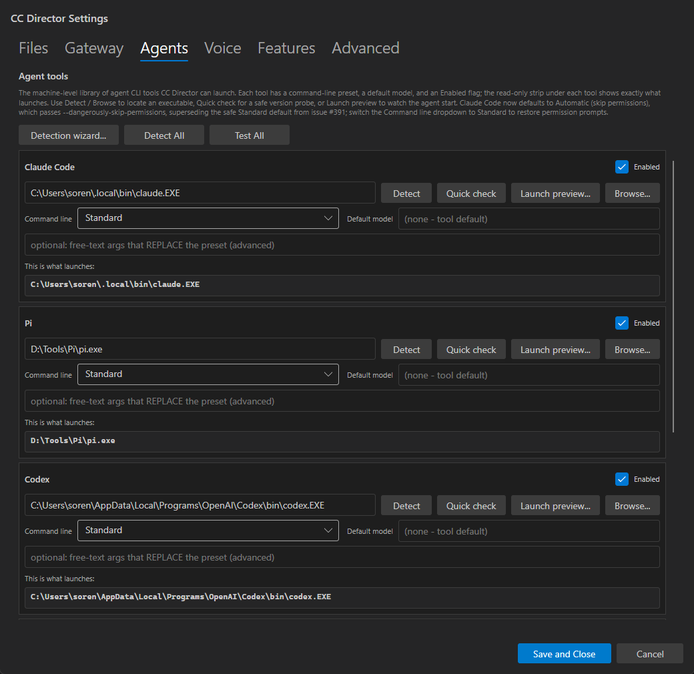

The QA Agent passed 10 of 11 acceptance criteria and bounced the issue
(flow:qa-failed) on a single defect: AC1 - at the default dialog
size on a 1920x1080 display, only 2 full agent-tool cards were visible without scrolling; the 3rd
card (Codex) was clipped. This report documents the fix and re-proves AC1, plus a regression
sanity-check on the criteria that already passed.
The QA Agent correctly identified the default dialog Height (860) as the binding constraint. The expanded hint paragraph + the toolbar + the ~60px Save/Cancel bar left only enough vertical room for 2 cards.
| Change | File | Why |
|---|---|---|
Default Height 860 -> 1010 (width unchanged at 1040) |
SettingsDialog.axaml |
Screen-safe maximum: dialog bottom = 1012, inside the 1032px work area. More card area without overflowing a 1080p screen. |
Per-card vertical footprint tightened: card border Padding 10 -> 8, card inner StackPanel Spacing 8 -> 6, inter-card Spacing 8 -> 6 |
SettingsDialog.axaml (all 5 cards) |
Shrinks each card by ~16px and the gaps, so the 3rd card clears the visible scroll area. Spacing stays within VisualStyle.md guidance; no color/token changes. |
| Hint paragraph condensed (still references issue #391 and the Automatic-default behavior - AC10 preserved) | SettingsDialog.axaml |
Reclaims a line of vertical chrome above the card list while keeping the documented accuracy AC10 requires. |
UI Automation measurements (dialog at default 1040x1010, Agents tab, on 1920x1080):
| Element | Position | Within visible scroll area? (ScrollViewer visible bottom = 931) |
|---|---|---|
| Claude Code card (header 243 ... preview strip bottom ~408 ... border bottom ~416) | top 243 | YES - full card visible |
| Pi card (header 477 ... preview strip bottom ~642 ... border bottom ~650) | top 477 | YES - full card visible |
| Codex card (header 711 ... preview strip bottom ~919 ... border bottom ~927) | top 711 | YES - full card (incl. preview strip + bottom border) fits above the Save bar (top 966) |
| Save and Close / Cancel bar | top 966 | - |
A vertical scrollbar is still present (correct - there are 5 cards total; Gemini and OpenCode remain below), but 3 full cards are visible without scrolling, which is what AC1 requires.


...\Codex\bin\codex.EXE), plus the card's bottom border - all
above the Save and Close / Cancel bar.
The fix changes only dialog sizing and card spacing/padding in
SettingsDialog.axaml - no logic, no handlers, no catalog/launch code. The preview
mechanism was re-exercised live to confirm it still works:
| AC | Check | Result |
|---|---|---|
| AC1 | 3 full cards, no scroll, default size on 1920x1080 | PASS (fixed - see above) |
| AC2 | "This is what launches:" preview strip on every card | PASS - visible/populated on Claude, Pi, Codex in the screenshot |
| AC3 | Preview reflects preset live | PASS - toggled Claude to "Automatic (skip permissions)"; strip updated live to ...claude.EXE --dangerously-skip-permissions |
| AC4-AC11 | Model/override, Quick check, Launch preview + teardown, Automatic default, config preserved, doc/hint accuracy, build/style | Untouched by this fix - no logic changed. Hint still references #391 + the Automatic default (AC10). Build clean (0/0). |
No drift. This is a pure dialog-layout (XAML) change to one Avalonia view - no architecture or
security-posture change, no DT-rule touched. docs/cencon/ unchanged.
dotnet build cc-director.sln -> Build succeeded. 0 Warning(s) /
0 Error(s). Slot exe built and launched from this worktree.
I believe this is finished. The single AC1 defect is fixed and re-proven; the other criteria are unaffected.